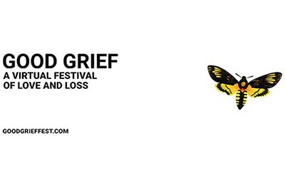

News and features
Bristol jumps in global subject rankings by Times Higher Education
25 October 2022
Several subjects taught at the University of Bristol have jumped higher in the 2023 Times Higher Education (THE) World University Rankings by Subject.

- Bristol jumps in global subject rankings by Times Higher Education 25 October 2022 Several subjects taught at the University of Bristol have jumped higher in the 2023 Times Higher Education (THE) World University Rankings by Subject.
- Insects affect electric fields in the atmosphere, researchers find 24 October 2022 The electric charge of insects can cause changes in the electricity of the atmosphere which are comparable with weather processes, researchers at the University of Bristol and University of Reading have found.
- Philip Leverhulme Prizes awarded to two University of Bristol academics 21 October 2022 Two academics from the University of Bristol have been awarded prestigious Philip Leverhulme Prizes.
- Dr Amber Young, 1963-2022 20 October 2022 Dr Amber Young, Honorary Professor of Burns Care at the University of Bristol, died peacefully at home on 17 September 2022 after suffering for a long time with breast cancer. Professor Jane Blazeby and colleagues in Bristol offer a remembrance.
- Bristol researchers help disadvantaged local families make their voices heard through power of art 20 October 2022 A community initiative supported by the University of Bristol working with families from one of the most deprived areas in the region has resulted in a new campaign calling for parents’ experience and expertise to be more valued and their voices to be better heard.
- Jaws drop for Bristol student on ITV’s The Voice 20 October 2022 University of Bristol student Kai Benjamin may only be 19, but this weekend he will perform in front of millions of people.
- Timely study on rising groundwater offers hope for drought-stricken East Africa 19 October 2022 New research indicates better groundwater supply management could hold the key to help combat the impact of climate change in East Africa, where countries are currently facing the worst drought and food insecurity in a generation.
- Hundreds of historical wildlife films dating back to the 19th Century have been preserved in archive 19 October 2022 Recordings of a boxing kangaroo, decoy gull heads and an experiment in high definition video are among nearly 300 natural history films digitised as part of the ‘Making Wildfilm History Archive Project’.
- Sexual health test vending machines launch in Bristol, North Somerset and South Gloucestershire 19 October 2022 New vending machines offering free sexual health testing kits have been launched in four venues across Bristol, North Somerset and South Gloucestershire by Unity Sexual Health, the sexual health service led by University Hospitals Bristol and Weston NHS Foundation Trust.
-  Good Grief announces first mini-festival about ‘Grief + Memory’ 18 October 2022 Good Grief's first mini-festival – exploring 'Grief + Memory'- will take place next week [Friday 28 and Saturday 29 October] with a number of live and on-demand virtual events.